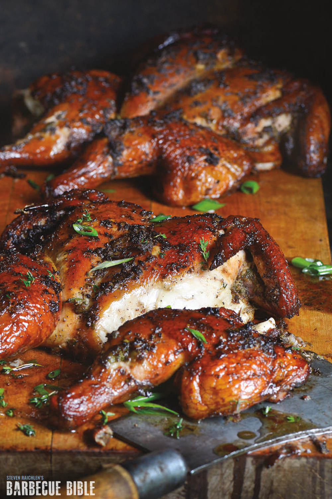

Jerk Chicken

Description
Jamaicans like their jerk chicken very well done—even leathery— recalling another smoked food native to the Americas: jerky.
Some scholars believe the terms are etymological cousins. I suggest serving the chicken a little less well done and juicier.
And because there’s so much flavor coming from the seasonings, this is a great dish to smoke on a gas grill.
The only thing cooler than the way it looks is how authentic it tastes.
Ingredients
- 2 chickens (3-1/2 to 4 pounds each)
- 3 cups Jerk Seasoning (or use your favorite commercial brand)
For the smoker pouch:
- 2 cups pimento wood chips, soaked in water to cover for 30 minutes, then drained
- 3 tablespoons allspice berries, soaked in water to cover for 30 minutes, then drained
For the steam pot:
- 5 pimento leaves or bay leaves
- 1 cup water
For smoking:
Instructions
- Spatchcock the chickens, that is, cut out the backbone and open the chickens up like a book.
- Pour half the jerk seasoning across the bottom of a large baking dish just large enough to hold 2 chickens. Arrange the chickens on top. Pour the remaining jerk seasoning over the birds. Cover with plastic wrap and marinate in the refrigerator for 12 hours, turning the chickens a couple times so they marinate evenly. Alternatively, marinate the birds in jumbo heavy duty resealable plastic bags.
- Make the smoker pouch: Place the pimento wood chips and allspice berries in the center of a large sheet of heavy duty foil. Fold over the edges to make a pouch. Poke a few holes in the top with a fork. Place this pouch over the lit side of the grill; in a few minutes it will start to smoke.
- Make the steam pot: Place the 5 pimento leaves and water in a pot with a heatproof handle and place in the back corner of the grill over one of the burners.
- On a gas grill: Set up your grill for indirect grilling and preheat to medium-low (275 degrees). Arrange the 4 pimento wood sticks on the grate from front to back, each parallel to the other. Arrange the chickens on top of the sticks. Lower the lid and indirect grill the chicken until darkly browned and cooked through (the internal temperature will be 165 degrees), 2 to 2-1/2 hours.
On a charcoal grill: Set up your grill for indirect grilling. Arrange the pimento sticks on the grate away from the heat over the drip pan. Arrange the chickens on top. Toss the soaked drained pimento wood chips and berries directly on the coals. Place the steam pot on the back of the grill. Cook as described above.
In a smoker: Light your smoker according to the manufacturer’s instructions and preheat to 275 degrees. Arrange the pimento leaves and sticks on one of the smoker racks. Arrange the chickens in the smoke chamber. Place the steam pot in the smoke chamber. Add the pimento wood and allspice berries as specified by the manufacturer. Cook as described above.